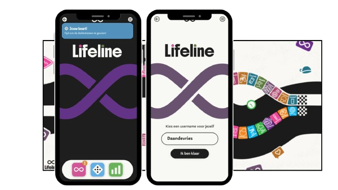

Overview
Lifeline is a hybrid board game that combines a physical game board with two connected digital interfaces. Players take on the role of either an influencer or an anti-influencer and experience the challenges, pressures, and emotions of the other side.
The project was designed to encourage empathy and reduce the growing divide between these online communities.
Lifeline

The challenge
Social media has created increasing tension between influencers and anti-influencers. Both groups often have strong assumptions about each other without understanding the realities behind their experiences. The challenge was to design an engaging experience that could make these perspectives tangible, understandable, and enjoyable to explore.
Research & Strategy
Through research and concept exploration, several game concepts were tested and combined into a final direction focused on:
- Perspective switching
- Empathy building
- Social media culture
- Interactive storytelling
- Accessible gameplay
The result was Lifeline: a game where players directly experience how online events affect different people in different ways.
Design solution
Lifeline combines a physical board game, two smartphone-like digital interfaces, real-time player statistics, interactive event cards and digital dice mechanics.
Each player follows a unique path with role-specific metrics. Influencer Metrics: Reach, Income, Stress. Anti-Influencer Metrics: Trust, Frustration, Jealousy. Player decisions and events influence both sides, creating a dynamic experience where actions have emotional and social consequences.
Reflection & Learnings
Lifeline taught me how design can be used to create understanding and empathy between different groups of people. Exploring both physical and digital interactions encouraged me to think beyond traditional interfaces and focus on the complete user experience. This project strengthened my curiosity for designing meaningful experiences that connect people through storytelling and interaction.
Toolbox
- Figma
- Adobe Illustrator
- Miro
- Canva
Thanks for taking a closer look at this project.